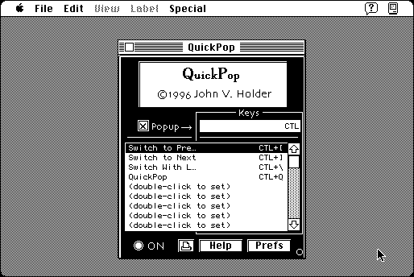

Download
QuickPop2.11.zip (131K) QuickPop 2.11 repackaged into a zipped hfs disk image and checksum file. The disk image can be mounted with Mini vMac.
QuickPop2.11.sea.hqx (209K) QuickPop 2.11 in the original format.
copyright: John V. Holder
mod date: Jun 30, 1996
license: shareware
from url :
QuickPop
Assign “Hotkeys” to “up to fifty (50) applications, documents, Apple Menu Items, control panels, FKEYs, monitor depth (colors) or speaker volume settings.” Also allows you to “have a menu pop up anywhere on the screen when you hold a key (option, command, control or shift in any combination)”. For System “6.0.5” or later. (Actually it seems to require System 7 to work properly, for Macintosh Plus emulation. It is documented as requiring a “Mac SE or better”, but it does seem to work on a Macintosh Plus in System 7.)

If you find these downloads useful, please consider helping the Gryphel Project, which hosts them.
Here are the md5 checksums for the downloads, signed with Gryphel Key 5:
--------- GRY SIGNED TEXT --------- 2a9eef818add1fde8cdea31c678960c3 QuickPop2.11.zip 07fdf29edd7d6bd102b9f428779510e4 QuickPop2.11.sea.hqx ------- BEGIN GRY SIGNATURE ------- Gry/4Xa8CFcUzxdN/ELYmBW9GmoX2vIaOVFnsMGwXEi3uGRX2eLtM1kl2iwsABOG eooJoEDooMc9qljgIu1KFamFuMkfwM84iJ5hBaJted2Ux8Rr8aIa0d0KmQssu6Rs tTbOwOMF0blRxSSS7AtRiTgMUTtK5JkyYRHG1+IW5A6siNmywwJuSvt+xyjVaATT -------- END GRY SIGNATURE --------